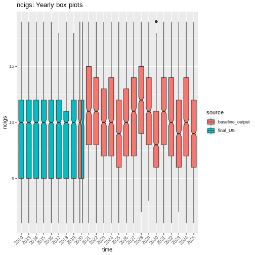
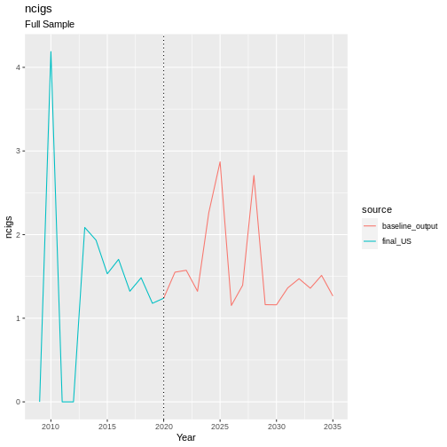
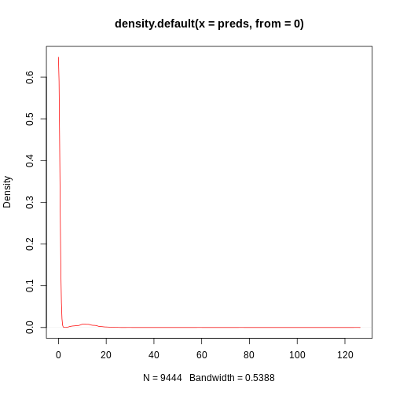

Tobacco
Tobacco consumption is measured in the usual number of cigarettes smoked per day, and is taken directly from a US variable (ncigs). Number of cigarettes consumed is an indicator of several mental illnesses including anxiety (Lawrence et al. 2010).
continuous_density(obs)

Fig. 19 plot of chunk tobacco_data
obs_no_zero <- obs[obs != 0] # remove zero values to look at counts only for smokers
continuous_density(obs_no_zero)

Fig. 20 plot of chunk tobacco_data
Transition Model
The number of zero inflated values is higher than expected for a count
distribution such as a poisson distribution. This inflation occurs
naturally as a large proportion (over 50%) of the population do not
smoke. There are two sources of cigarette consumption that can be
modelled using zero inflated models. In this case a zero-inflated
poisson (ZIP) is used. Two models are fitted simultaneously. One is a
logistic regression that estimates whether a person smokes cigarettes or
not. This provides a simple probability of smoking or not. The second is
a poisson counts model estimating the number of cigarettes consumed.
This is modelled using the zeroinfl() function from the
pscl
package in R.
Formula:
NOTE: The syntax seen above I(ncigs>0) represents a binary flag for
whether a person smoked previously (ncigs > 0).
Two set of variables are needed for the logistic and poisson parts of the ZIP model respectively. These two formula are separated by a ‘|’ symbol. On the right hand side of the ‘|’ is the formula for the logistic regression that determines whether an individual is a smoker or not. On the left side is the formula for the poisson model to predict the counts of cigarettes for smokers.
ncigs_last previous number consumed. age. persons age. generally older people and very young smoke. sex. ethnicity. certain ethnicities more likely to smoke cigarettes. region. education_state. highest qualification. housing quality. neighbourhood safety. loneliness. nutrition quality. hh_income household income SF_12. wellbeing estimates number of cigarettes smoked. behind on bills. financial situation. labour_state. whether a person is employed or not. job_sec job quality
zip_output(model)
##
## Call:
## zeroinfl(formula = formula, data = data, weights = weight, dist = "pois",
## link = "logit")
##
## Pearson residuals:
## Min 1Q Median 3Q Max
## -1.39165 -0.02575 -0.01822 -0.01256 7.88394
##
## Count model coefficients (poisson with log link):
## Estimate Std. Error z value
## (Intercept) 1.756078 0.515096 3.409
## scale(age) 0.088226 0.072250 1.221
## factor(sex)Male 0.132957 0.100926 1.317
## relevel(factor(ethnicity), ref = "WBI")BAN -0.458047 0.724719 -0.632
## relevel(factor(ethnicity), ref = "WBI")BLA -0.324150 0.524756 -0.618
## relevel(factor(ethnicity), ref = "WBI")BLC -0.395408 0.500650 -0.790
## relevel(factor(ethnicity), ref = "WBI")CHI -0.202406 1.083906 -0.187
## relevel(factor(ethnicity), ref = "WBI")IND -0.222598 0.469511 -0.474
## relevel(factor(ethnicity), ref = "WBI")MIX -0.343940 0.325918 -1.055
## relevel(factor(ethnicity), ref = "WBI")OAS -0.604959 1.098497 -0.551
## relevel(factor(ethnicity), ref = "WBI")OBL -0.423129 1.781472 -0.238
## relevel(factor(ethnicity), ref = "WBI")OTH 0.168325 0.534438 0.315
## relevel(factor(ethnicity), ref = "WBI")PAK -0.852220 0.645376 -1.321
## relevel(factor(ethnicity), ref = "WBI")WHO 0.129127 0.178164 0.725
## factor(region)East of England -0.207061 0.220486 -0.939
## factor(region)London -0.195256 0.224629 -0.869
## factor(region)North East -0.117416 0.263432 -0.446
## factor(region)North West -0.043274 0.201905 -0.214
## factor(region)Northern Ireland 0.013488 0.398038 0.034
## factor(region)Scotland -0.179701 0.257042 -0.699
## factor(region)South East -0.039395 0.207855 -0.190
## factor(region)South West -0.235811 0.227424 -1.037
## factor(region)Wales -0.045986 0.260487 -0.177
## factor(region)West Midlands 0.122812 0.198825 0.618
## factor(region)Yorkshire and The Humber -0.004834 0.211307 -0.023
## relevel(factor(education_state), ref = "1")0 0.422996 0.443084 0.955
## relevel(factor(education_state), ref = "1")2 0.362267 0.443040 0.818
## relevel(factor(education_state), ref = "1")3 0.157176 0.459963 0.342
## relevel(factor(education_state), ref = "1")5 0.199678 0.467004 0.428
## relevel(factor(education_state), ref = "1")6 0.103512 0.466882 0.222
## relevel(factor(education_state), ref = "1")7 0.497267 0.464812 1.070
## factor(housing_quality)Low -0.056672 0.175289 -0.323
## factor(housing_quality)Medium -0.025581 0.117700 -0.217
## factor(loneliness)2 0.164228 0.110798 1.482
## factor(loneliness)3 -0.088262 0.187043 -0.472
## scale(nutrition_quality) -0.086828 0.057143 -1.519
## scale(ncigs) 0.060370 0.011383 5.303
## scale(hh_income) -0.047014 0.072999 -0.644
## scale(SF_12) -0.042692 0.052335 -0.816
## factor(behind_on_bills)2 0.032621 0.140519 0.232
## factor(behind_on_bills)3 -0.223792 0.591207 -0.379
## factor(financial_situation)2 0.132737 0.145536 0.912
## factor(financial_situation)3 0.014451 0.167452 0.086
## factor(financial_situation)4 0.047932 0.214865 0.223
## factor(financial_situation)5 -0.059367 0.284620 -0.209
## factor(S7_labour_state)PT Employed -0.012102 0.159718 -0.076
## factor(S7_labour_state)Job Seeking 0.137921 0.175851 0.784
## factor(S7_labour_state)FT Education -0.389807 0.402215 -0.969
## factor(S7_labour_state)Family Care 0.172396 0.246076 0.701
## factor(S7_labour_state)Not Working 0.053776 0.146154 0.368
## factor(job_sec)1 0.148942 0.307434 0.484
## factor(job_sec)2 -0.006664 0.337203 -0.020
## factor(job_sec)3 0.168864 0.214513 0.787
## factor(job_sec)4 0.168856 0.225449 0.749
## factor(job_sec)5 0.123171 0.230018 0.535
## factor(job_sec)6 0.225291 0.225344 1.000
## factor(job_sec)7 0.112134 0.208409 0.538
## factor(job_sec)8 0.244970 0.226591 1.081
## Pr(>|z|)
## (Intercept) 0.000651 ***
## scale(age) 0.222038
## factor(sex)Male 0.187716
## relevel(factor(ethnicity), ref = "WBI")BAN 0.527365
## relevel(factor(ethnicity), ref = "WBI")BLA 0.536762
## relevel(factor(ethnicity), ref = "WBI")BLC 0.429652
## relevel(factor(ethnicity), ref = "WBI")CHI 0.851867
## relevel(factor(ethnicity), ref = "WBI")IND 0.635425
## relevel(factor(ethnicity), ref = "WBI")MIX 0.291290
## relevel(factor(ethnicity), ref = "WBI")OAS 0.581829
## relevel(factor(ethnicity), ref = "WBI")OBL 0.812256
## relevel(factor(ethnicity), ref = "WBI")OTH 0.752794
## relevel(factor(ethnicity), ref = "WBI")PAK 0.186668
## relevel(factor(ethnicity), ref = "WBI")WHO 0.468595
## factor(region)East of England 0.347674
## factor(region)London 0.384715
## factor(region)North East 0.655802
## factor(region)North West 0.830289
## factor(region)Northern Ireland 0.972969
## factor(region)Scotland 0.484482
## factor(region)South East 0.849678
## factor(region)South West 0.299792
## factor(region)Wales 0.859872
## factor(region)West Midlands 0.536781
## factor(region)Yorkshire and The Humber 0.981750
## relevel(factor(education_state), ref = "1")0 0.339748
## relevel(factor(education_state), ref = "1")2 0.413537
## relevel(factor(education_state), ref = "1")3 0.732565
## relevel(factor(education_state), ref = "1")5 0.668962
## relevel(factor(education_state), ref = "1")6 0.824541
## relevel(factor(education_state), ref = "1")7 0.284698
## factor(housing_quality)Low 0.746462
## factor(housing_quality)Medium 0.827943
## factor(loneliness)2 0.138279
## factor(loneliness)3 0.637012
## scale(nutrition_quality) 0.128639
## scale(ncigs) 1.14e-07 ***
## scale(hh_income) 0.519551
## scale(SF_12) 0.414641
## factor(behind_on_bills)2 0.816425
## factor(behind_on_bills)3 0.705034
## factor(financial_situation)2 0.361740
## factor(financial_situation)3 0.931228
## factor(financial_situation)4 0.823472
## factor(financial_situation)5 0.834774
## factor(S7_labour_state)PT Employed 0.939601
## factor(S7_labour_state)Job Seeking 0.432860
## factor(S7_labour_state)FT Education 0.332469
## factor(S7_labour_state)Family Care 0.483564
## factor(S7_labour_state)Not Working 0.712916
## factor(job_sec)1 0.628053
## factor(job_sec)2 0.984232
## factor(job_sec)3 0.431166
## factor(job_sec)4 0.453871
## factor(job_sec)5 0.592314
## factor(job_sec)6 0.317425
## factor(job_sec)7 0.590546
## factor(job_sec)8 0.279648
##
## Zero-inflation model coefficients (binomial with logit link):
## Estimate Std. Error z value Pr(>|z|)
## (Intercept) 5.32237 1.07790 4.938 7.90e-07
## I(factor(ncigs > 0))TRUE -4.69548 0.93360 -5.029 4.92e-07
## relevel(factor(ethnicity), ref = "WBI")BAN -0.50680 3.28346 -0.154 0.877
## relevel(factor(ethnicity), ref = "WBI")BLA -0.09712 2.29730 -0.042 0.966
## relevel(factor(ethnicity), ref = "WBI")BLC -1.14543 2.34089 -0.489 0.625
## relevel(factor(ethnicity), ref = "WBI")CHI -0.89546 3.71259 -0.241 0.809
## relevel(factor(ethnicity), ref = "WBI")IND 0.14328 2.26575 0.063 0.950
## relevel(factor(ethnicity), ref = "WBI")MIX -0.08255 2.00374 -0.041 0.967
## relevel(factor(ethnicity), ref = "WBI")OAS 0.39417 3.41132 0.116 0.908
## relevel(factor(ethnicity), ref = "WBI")OBL -0.43468 8.72959 -0.050 0.960
## relevel(factor(ethnicity), ref = "WBI")OTH 1.73849 3.39195 0.513 0.608
## relevel(factor(ethnicity), ref = "WBI")PAK 0.96085 2.13239 0.451 0.652
## relevel(factor(ethnicity), ref = "WBI")WHO -0.43313 1.21204 -0.357 0.721
## factor(housing_quality)Low -0.57763 1.15368 -0.501 0.617
## factor(housing_quality)Medium -0.52552 0.70965 -0.741 0.459
## factor(loneliness)2 -0.14139 0.74225 -0.190 0.849
## factor(loneliness)3 0.13103 1.20400 0.109 0.913
## scale(nutrition_quality) 0.05535 0.33362 0.166 0.868
## scale(ncigs) -0.62567 0.39396 -1.588 0.112
## relevel(factor(job_sec), ref = "3")0 0.05609 1.33826 0.042 0.967
## relevel(factor(job_sec), ref = "3")1 -0.80761 1.65422 -0.488 0.625
## relevel(factor(job_sec), ref = "3")2 0.02726 1.36350 0.020 0.984
## relevel(factor(job_sec), ref = "3")4 -0.33529 1.02164 -0.328 0.743
## relevel(factor(job_sec), ref = "3")5 -0.35811 1.21971 -0.294 0.769
## relevel(factor(job_sec), ref = "3")6 -0.49222 1.38210 -0.356 0.722
## relevel(factor(job_sec), ref = "3")7 -0.61392 0.94742 -0.648 0.517
## relevel(factor(job_sec), ref = "3")8 -0.68657 1.19747 -0.573 0.566
## scale(hh_income) 0.05336 0.40102 0.133 0.894
## scale(SF_12) 0.07008 0.34707 0.202 0.840
## factor(behind_on_bills)2 -1.16404 1.15193 -1.011 0.312
## factor(behind_on_bills)3 0.40170 5.17767 0.078 0.938
## factor(financial_situation)2 -0.12475 0.82111 -0.152 0.879
## factor(financial_situation)3 -0.52030 0.97033 -0.536 0.592
## factor(financial_situation)4 -0.17864 1.40060 -0.128 0.899
## factor(financial_situation)5 -1.09377 2.30711 -0.474 0.635
##
## (Intercept) ***
## I(factor(ncigs > 0))TRUE ***
## relevel(factor(ethnicity), ref = "WBI")BAN
## relevel(factor(ethnicity), ref = "WBI")BLA
## relevel(factor(ethnicity), ref = "WBI")BLC
## relevel(factor(ethnicity), ref = "WBI")CHI
## relevel(factor(ethnicity), ref = "WBI")IND
## relevel(factor(ethnicity), ref = "WBI")MIX
## relevel(factor(ethnicity), ref = "WBI")OAS
## relevel(factor(ethnicity), ref = "WBI")OBL
## relevel(factor(ethnicity), ref = "WBI")OTH
## relevel(factor(ethnicity), ref = "WBI")PAK
## relevel(factor(ethnicity), ref = "WBI")WHO
## factor(housing_quality)Low
## factor(housing_quality)Medium
## factor(loneliness)2
## factor(loneliness)3
## scale(nutrition_quality)
## scale(ncigs)
## relevel(factor(job_sec), ref = "3")0
## relevel(factor(job_sec), ref = "3")1
## relevel(factor(job_sec), ref = "3")2
## relevel(factor(job_sec), ref = "3")4
## relevel(factor(job_sec), ref = "3")5
## relevel(factor(job_sec), ref = "3")6
## relevel(factor(job_sec), ref = "3")7
## relevel(factor(job_sec), ref = "3")8
## scale(hh_income)
## scale(SF_12)
## factor(behind_on_bills)2
## factor(behind_on_bills)3
## factor(financial_situation)2
## factor(financial_situation)3
## factor(financial_situation)4
## factor(financial_situation)5
## ---
## Signif. codes: 0 '***' 0.001 '**' 0.01 '*' 0.05 '.' 0.1 ' ' 1
##
## Number of iterations in BFGS optimization: 62
## Log-likelihood: -225.5 on 93 Df
Validation
handover_boxplots(raw.dat, base.dat, v)

Fig. 21 plot of chunk ncigs_validation
handover_lineplots(raw.dat, base.dat, v)

Fig. 22 plot of chunk ncigs_validation
Results
Almost all coefficients significant. Particularly previous consumption of cigarettes. Good estimation of the number of non-smokers in the population at around 55%. Counts of smoking are underdispersed and fail to estimate consumption over 20 cigarettes.
## Error in density.default(obs, from = 0): argument 'x' must be numeric

Fig. 23 plot of chunk tobacco_output
References
Lawrence, David, Julie Considine, Francis Mitrou, and Stephen R Zubrick. 2010. “Anxiety Disorders and Cigarette Smoking: Results from the Australian Survey of Mental Health and Wellbeing.” Australian & New Zealand Journal of Psychiatry 44 (6): 520–27.